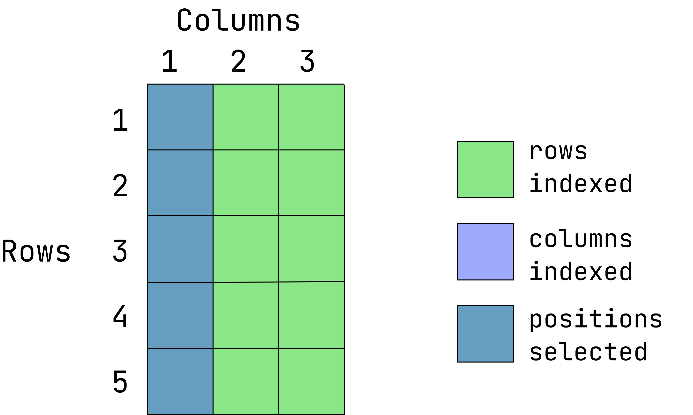
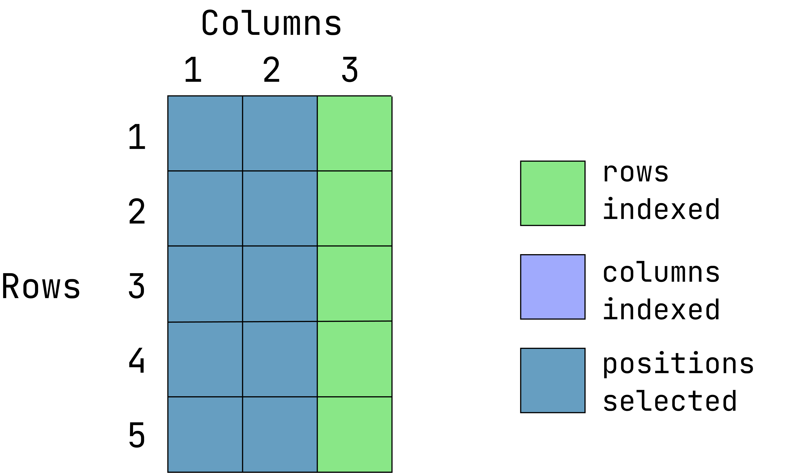

v1 <- 1:10
v2 <- c("apples", "pears", "oranges")
v3 <- c(1, 5, 7, 85)Data Structures
The longest and most important lesson of them all! These are the foundation of everything you are likely to do R as a scientists. Understanding these will take time and practice, so you may find yourself returning to this page to remind yourself of these data structures.
Learning Goals
This is a big lesson teaching many foundation concepts! It’s very very important you understand what was taught at this phase before moving forward.
At the end of this lesson, you should:
- Understand the difference between a vector, data.frame, matrix and list
- Understand how to index items in a vector, data frame and list
Introduction to Common Data Structures
Previously, we looked at data types. Now we need to consider how those types are arranged into complex structures (that is, objects) we can access and manipulate.
There are several data structures commonly used in R:
- vector
- data.frame
- matrix
- list
The vector
A collection of items all coerced to be the same data type that we learned about in the previous lesson. These are sometimes called “atomic vectors” in the R documentation.
A vector can also consist of only one value or no value.
v4 <- "violets"
v5 <- TRUE
v6 <- NAIt has the attribute length and each item in a vector can also be named.
length(v1); length(v2); length(v3)[1] 10[1] 3[1] 4names(v3) <- c("A", "B", "C", "D")
v3 A B C D
1 5 7 85 Accessing items
Items in a vector can be accessed by referencing the numeric position in the vector, starting at 1 and ending at the vector length. If a vector has length of one, it not necessary to index that.
x[1] will access the first item in the vector, while x[5] will access the 5th element. Multiple item can be indexed: x[c(1,5)]. If an index position, it repeated, that item will be returned as often as it is called:
v1[1][1] 1v1[5][1] 5v1[c(1,5)][1] 1 5v1[c(1,1)][1] 1 1Any collection of numbers can be used to index items in a vector:
v1[c(1, 1:5)][1] 1 1 2 3 4 5What happens if a negative number is used?
v1[-1][1] 2 3 4 5 6 7 8 9 10Everything but that index position is returned.
What if you index a position that does not exist?
v1[0]integer(0)v1[20][1] NAItems in a vector can also be accessed by their name:
v3["A"]A
1 What happens if there are replicate names in a vector and you try to index (extract a value) for that name?
names(v3) <- c("A", "B", "C", "A")
v3 A B C A
1 5 7 85 v3["A"]A
1 Only the first instance of a name is returned.
The data frame
A collection of vectors all of the name length. Each vector is a single data type, but different columns can be different data types. This is similar to a typical workbook you might open in Excel or another spreadsheet program. These can be only one column wide, but they often consist of more than that.
d1 <- data.frame(var1 = 1:5,
var2 = c("a", "b", "a", "b", "c"),
var3 = c("alpha", "beta", "gamma", "zeta", "psi"))
d1 var1 var2 var3
1 1 a alpha
2 2 b beta
3 3 a gamma
4 4 b zeta
5 5 c psiNotes that is a single value is supplied for a column, it will be repeated for the entire column.
A data frame has attributes for:
nrownumber of rowsncolnumber of columnscolnamescolumn namesrownamesrow names (if none are provided, R will generate integer row names starting at 1)
Note
While duplicate column names in a data frame are allowed, they are not advised, and may throw an error during data import, depending on the import function used.
Check the number of rows and columns:
nrow(d1)[1] 5ncol(d1); length(d1)[1] 3[1] 3dim(d1) # tells us row and column lengths in one command[1] 5 3Look at the rownames and colnames atrributes:
rownames(d1)[1] "1" "2" "3" "4" "5"colnames(d1)[1] "var1" "var2" "var3"
Note
The rownames attribute can be set, but if it is not, it is automatically created within R from 1 to the total number of rows. Row names are a tricky attribute than many packages in R do not support. A function may toss out your row names without any warning!
In general, I do not recommend setting the row names attribute in data frames to anything other than the default values unless a package function specifically requires it.
What does length(d1) return? How about names(d1)?
We can look at the overall structure of a data.frame with View():
View(d1)If a particularly large file is loaded into R, using View() may be very slow (if you have a large number of rows) and provide an incomplete view (if you have a large number of columns). In that case, you can use str() to look at a data frame’s structure:
str(d1)'data.frame': 5 obs. of 3 variables:
$ var1: int 1 2 3 4 5
$ var2: chr "a" "b" "a" "b" ...
$ var3: chr "alpha" "beta" "gamma" "zeta" ...The data frame is the most common data structure scientists use in R
Accessing items
Like vectors, data frames can be indexed by position, except now we have two dimensions to consider. You can extract individual elements in a data frame by references the row and column position, my_dataframe[row, column].
- Extract the items located in the first 2 row2 and last 2 columns:
Visual of what we want:

(This graphic is an overlay of green over blue, creating a dark teal color. The green represents rows indexed, the blue is columns indexed and the teal is the intersection between those two. If a color is not visible, that is because it is under the teal overlay.)
d1[1:2, 2:3] var2 var3
1 a alpha
2 b beta- Extract the first two rows and all of the columns:

d1[1:2, ] var1 var2 var3
1 1 a alpha
2 2 b betaWhen the column position is left empty, all columns are returned
- Extract the entire first column and all rows:

d1[ ,1][1] 1 2 3 4 5When the row position is left empty, all rows are returned
- Extract the values located in the first 2 rows and first two columns:

d1[1:2, 1:2] var1 var2
1 1 a
2 2 b- Return everything except the third columns

d1[ ,-3] var1 var2
1 1 a
2 2 b
3 3 a
4 4 b
5 5 c- Return everything except the first 2 rows:

d1[-(1:2), ] var1 var2 var3
3 3 a gamma
4 4 b zeta
5 5 c psi
Things to note
Indexing accepts numeric/integer vectors, so you can use a sequence (3:10), or concatenated positions (c(1, 2, 5, 10)), or a combination of both (c(1:10, 13)).
When indexing positions in a vector or data frame (or anything else), the amount of white space does not affect the outcome. These are equivalent: d[1,2], d[1, 2], d[ 1, 2]
Column Referencing
Data in R data frames can also be referred to by their column names using the notation dataframe$column_name:
d1$var1[1] 1 2 3 4 5The data are returned as a vector (with the typical attributes of a vector: length and names).
This can also be used to create a new column in the data frame:
d1$var4 <- 0:-4In this example, a new column called “var4” was created, consisting of sequence numbers from zero to -4.
var1 var2 var3 var4
1 1 a alpha 0
2 2 b beta -1
3 3 a gamma -2
4 4 b zeta -3
5 5 c psi -4Value replacement
There are likely to be moments when you want to replace values in a data frame or vector with something else. You can do that with indexing and variable assignment.
Let’s image that we want to assign the third value in the second column as NA. First, we index the that position, then we assign a value to it (NA in this case):
d1[3, 2] <- NAThe matrix
A very mile-high view of the matrix is given here because you while may encounter this, it is a less commonly used data structure in R.
Like a data frame, a matrix is a collection of vectors all the same length, except all vectors must be the same data type (e.g. numeric, character, etc).
An R matrix is not strictly identical to the mathematical concept of a matrix, but if you make an R matrix consisting only of numbers, it can be used like a mathematical matrix. Furthermore, there several mathematical operations that are intended to only work on matrices such as matrix pre-multiplication %*% or extraction of a diagonal from a square matrix, diag().
A matrix lacks some of the attributes and functionality that are possible for data frames. Columns names can be given, but they cannot be used to index columns (i.e. my_matrix$col will throw an error).
Matrices are not commonly seen in user-facing functions in R, but within R internals, they are widely used. You may occasionally come across a package requiring a matrix or perhaps you work in a math-intensive discipline where matrix operations are part of your regular work.
FYI: how to make a matrix
A matrix can be created by providing a vector of numbers and telling it to populate a table of given dimensions:
x = 1:100
m1 <- matrix(data = x, nrow = 5, ncol = 20, byrow = TRUE)The list
This is the least structured and hence most flexible data structure that exists in R. A list is like a closet that happens to be filled with other objects, or your kitchen sink, or the trunk of your car. It’s a collection of objects of varying sizes, types, and so on. A vector, scalar and data frame can all be combined into a list. A list can contain other lists inside of it (although this list nesting can be cumbersome to deal with).
L1 <- list(v1, v2, v3, d1, m1)
str(L1)List of 5
$ : int [1:10] 1 2 3 4 5 6 7 8 9 10
$ : chr [1:3] "apples" "pears" "oranges"
$ : Named num [1:4] 1 5 7 85
..- attr(*, "names")= chr [1:4] "A" "B" "C" "A"
$ :'data.frame': 5 obs. of 4 variables:
..$ var1: int [1:5] 1 2 3 4 5
..$ var2: chr [1:5] "a" "b" NA "b" ...
..$ var3: chr [1:5] "alpha" "beta" "gamma" "zeta" ...
..$ var4: int [1:5] 0 -1 -2 -3 -4
$ : int [1:5, 1:20] 1 21 41 61 81 2 22 42 62 82 ...Each list item can have a name. Or not.
L1 <- list("number" = v1, "flower" = v3, v4, "df" = d1, m1)
names(L1)[1] "number" "flower" "" "df" "" str(L1)List of 5
$ number: int [1:10] 1 2 3 4 5 6 7 8 9 10
$ flower: Named num [1:4] 1 5 7 85
..- attr(*, "names")= chr [1:4] "A" "B" "C" "A"
$ : chr "violets"
$ df :'data.frame': 5 obs. of 4 variables:
..$ var1: int [1:5] 1 2 3 4 5
..$ var2: chr [1:5] "a" "b" NA "b" ...
..$ var3: chr [1:5] "alpha" "beta" "gamma" "zeta" ...
..$ var4: int [1:5] 0 -1 -2 -3 -4
$ : int [1:5, 1:20] 1 21 41 61 81 2 22 42 62 82 ...
Note
If you end up with too many objects in your global environment, you can always delete them with the rm() function:
rm(myvar)
rm(var1, var2, var3)If one object ends up with the wrong name, you can copy the object to a new name and delete the old version:
new <- old
rm(old)Accessing items
As mentioned earlier, lists are relatively unstructured and follow fewer rules. You can access list items by their numeric position, list[[1]], or their name (if it exists), list$name.
L1[[1]] [1] 1 2 3 4 5 6 7 8 9 10L1$df var1 var2 var3 var4
1 1 a alpha 0
2 2 b beta -1
3 3 <NA> gamma -2
4 4 b zeta -3
5 5 c psi -4Once a list item is accessed, the normal indexing rules apply. The 4th item in the list called “L1” is a data frame.
L1[[4]] var1 var2 var3 var4
1 1 a alpha 0
2 2 b beta -1
3 3 <NA> gamma -2
4 4 b zeta -3
5 5 c psi -4L1[[4]]$var1[1] 1 2 3 4 5L1[[4]][1:2,] var1 var2 var3 var4
1 1 a alpha 0
2 2 b beta -1Checking the class of a data structure
Use the class() command.
class(v1)[1] "integer"class(d1)[1] "data.frame"class(L1)[1] "list"You can also explicitly ask R if an object is a specific data structure:
is.data.frame(d1)[1] TRUEis.matrix(d1)[1] FALSEis.list(L1)[1] TRUEis.data.frame(L1)[1] FALSECoercion from is also possible. If you find yourself working with matrices, you can convert a data.frame to a matrix. Or a function may return a matrix that you need converted back to a data frame:
as.data.frame()
as.matrix()
as.list()Final Notes
There are several more object types, but these are by far the ones you are most likely to encounter and use.
More resources:
- For a deeper look into vectors, read this chapter from R 4 Data Science
- To learn more about subsetting, read this chapter from Advanced R (they are not kidding; this book is advanced.)
For a very comprehensive guide to R object types, check out the official R language manual. Warning: this manual is extremely technical! If you choose to check it out, be patient with yourself. It may take several readings to fully understand the content.
Putting it all together
When information is extracted from a vector, data.frame, matrix or list using these tools, the returned information can always be assigned to a new object:
new <- d1[1:2, -3]Sometimes, we need that information assigned to a new object so we can it use later. Other times, printing the extracted information to the console is sufficient for meeting researcher needs.